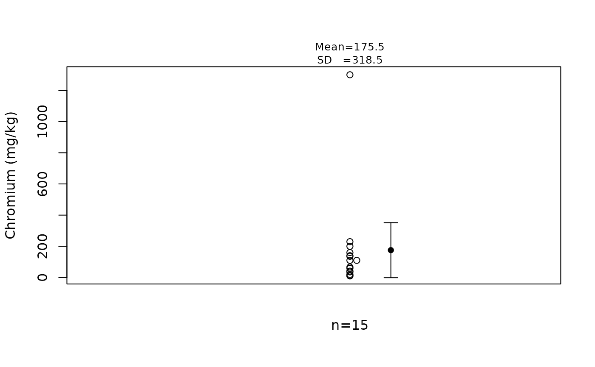
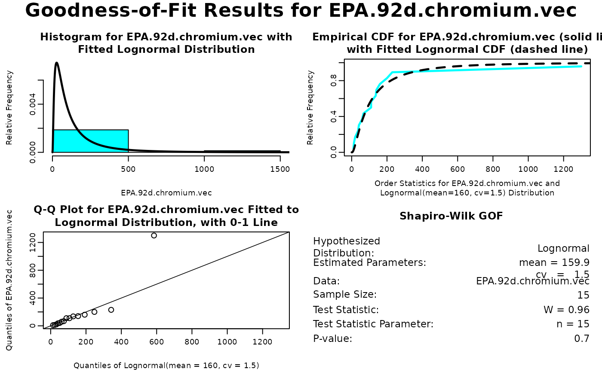

Estimate the mean and coefficient of variation of a lognormal distribution, and optionally construct a confidence interval for the mean.
elnormAlt(x, method = "mvue", ci = FALSE, ci.type = "two-sided",
ci.method = "land", conf.level = 0.95, parkin.list = NULL)Extended methods and derivations are available in
Probability distributions and parameter estimation: elnormAlt.
Open the vignette locally with
vignette("distributions-and-estimation", package = "EnvStats").
numeric vector of positive observations.
character string specifying the method of estimation. Possible values are
"mvue" (minimum variance unbiased; the default), "qmle"
(quasi maximum likelihood), "mle" (maximum likelihood), "mme"
(method of moments), and "mmue" (method of moments based on the unbiased
estimate of variance). See the DETAILS section for more information on these
estimation methods.
logical scalar indicating whether to compute a confidence interval for the
mean. The default value is FALSE.
character string indicating what kind of confidence interval to compute. The
possible values are "two-sided" (the default), "lower", and
"upper". This argument is ignored if ci=FALSE.
character string indicating what method to use to construct the confidence interval
for the mean. The possible values are "land" (Land's method; the default),
zou (Zou et al.'s method), "parkin" (Parkin et al.'s method),
"cox" (Cox's approximation), and "normal.approx" (normal approximation).
See the DETAILS section for more information. This argument is ignored if
ci=FALSE.
a scalar between 0 and 1 indicating the confidence level of the confidence interval.
The default value is conf.level=0.95. This argument is ignored if
ci=FALSE.
a list containing arguments for the function eqnpar. The components
of this list are lcl.rank (set to NULL by default), ucl.rank
(set to NULL by default), ci.method (set to "exact" if the
sample size is \(\le 20\), otherwise set to "normal.approx"), and
approx.conf.level (set to the value of conf.level). This argument is
ignored unless ci=TRUE and ci.method="parkin".
a list of class "estimate" containing the estimated parameters and other information.
See estimate.object for details.
Aitchison, J., and J.A.C. Brown (1957). The Lognormal Distribution (with special references to its uses in economics). Cambridge University Press, London, Chapter 5.
Armstrong, B.G. (1992). Confidence Intervals for Arithmetic Means of Lognormally Distributed Exposures. American Industrial Hygiene Association Journal 53, 481–485.
Bradu, D., and Y. Mundlak. (1970). Estimation in Lognormal Linear Models. Journal of the American Statistical Association 65, 198–211.
Cohn, T.A., L.L. DeLong, E.J. Gilroy, R.M. Hirsch, and D.K. Wells. (1989). Estimating Constituent Loads. Water Resources Research 25(5), 937–942.
Crow, E.L., and K. Shimizu. (1988). Lognormal Distributions: Theory and Applications. Marcel Dekker, New York, Chapter 2.
El-Shaarawi, A.H., and J. Lin. (2007). Interval Estimation for Log-Normal Mean with Applications to Water Quality. Environmetrics 18, 1–10.
El-Shaarawi, A.H., and R. Viveros. (1997). Inference About the Mean in Log-Regression with Environmental Applications. Environmetrics 8, 569–582.
Forbes, C., M. Evans, N. Hastings, and B. Peacock. (2011). Statistical Distributions. Fourth Edition. John Wiley and Sons, Hoboken, NJ.
Finney, D.J. (1941). On the Distribution of a Variate Whose Logarithm is Normally Distributed. Supplement to the Journal of the Royal Statistical Society 7, 155–161.
Gilbert, R.O. (1987). Statistical Methods for Environmental Pollution Monitoring. Van Nostrand Reinhold, New York, NY.
Johnson, N. L., S. Kotz, and N. Balakrishnan. (1994). Continuous Univariate Distributions, Volume 1. Second Edition. John Wiley and Sons, New York.
Krishnamoorthy, K., and T.P. Mathew. (2003). Inferences on the Means of Lognormal Distributions Using Generalized p-Values and Generalized Confidence Intervals. Journal of Statistical Planning and Inference 115, 103–121.
Land, C.E. (1971). Confidence Intervals for Linear Functions of the Normal Mean and Variance. The Annals of Mathematical Statistics 42(4), 1187–1205.
Land, C.E. (1972). An Evaluation of Approximate Confidence Interval Estimation Methods for Lognormal Means. Technometrics 14(1), 145–158.
Land, C.E. (1973). Standard Confidence Limits for Linear Functions of the Normal Mean and Variance. Journal of the American Statistical Association 68(344), 960–963.
Land, C.E. (1975). Tables of Confidence Limits for Linear Functions of the Normal Mean and Variance, in Selected Tables in Mathematical Statistics, Vol. III. American Mathematical Society, Providence, RI, pp. 385–419.
Likes, J. (1980). Variance of the MVUE for Lognormal Variance. Technometrics 22(2), 253–258.
Limpert, E., W.A. Stahel, and M. Abbt. (2001). Log-Normal Distributions Across the Sciences: Keys and Clues. BioScience 51, 341–352.
Millard, S.P., and N.K. Neerchal. (2001). Environmental Statistics with S-PLUS. CRC Press, Boca Raton, FL.
Ott, W.R. (1995). Environmental Statistics and Data Analysis. Lewis Publishers, Boca Raton, FL.
Parkin, T.B., J.J. Meisinger, S.T. Chester, J.L. Starr, and J.A. Robinson. (1988). Evaluation of Statistical Estimation Methods for Lognormally Distributed Variables. Journal of the Soil Science Society of America 52, 323–329.
Parkin, T.B., S.T. Chester, and J.A. Robinson. (1990). Calculating Confidence Intervals for the Mean of a Lognormally Distributed Variable. Journal of the Soil Science Society of America 54, 321–326.
Singh, A., A.K. Singh, and R.J. Iaci. (2002). Estimation of the Exposure Point Concentration Term Using a Gamma Distribution. EPA/600/R-02/084. October 2002. Technology Support Center for Monitoring and Site Characterization, Office of Research and Development, Office of Solid Waste and Emergency Response, U.S. Environmental Protection Agency, Washington, D.C.
Singh, A., R. Maichle, and N. Armbya. (2010a). ProUCL Version 4.1.00 User Guide (Draft). EPA/600/R-07/041, May 2010. Office of Research and Development, U.S. Environmental Protection Agency, Washington, D.C.
Singh, A., N. Armbya, and A. Singh. (2010b). ProUCL Version 4.1.00 Technical Guide (Draft). EPA/600/R-07/041, May 2010. Office of Research and Development, U.S. Environmental Protection Agency, Washington, D.C.
USEPA. (1992d). Supplemental Guidance to RAGS: Calculating the Concentration Term. Publication 9285.7-081, May 1992. Intermittenet Bulletin, Volume 1, Number 1. Office of Emergency and Remedial Response, Hazardous Site Evaluation Division, OS-230. Office of Solid Waste and Emergency Response, U.S. Environmental Protection Agency, Washington, D.C.
USEPA. (2009). Statistical Analysis of Groundwater Monitoring Data at RCRA Facilities, Unified Guidance. EPA 530/R-09-007, March 2009. Office of Resource Conservation and Recovery Program Implementation and Information Division. U.S. Environmental Protection Agency, Washington, D.C.
Zou, G.Y., C.Y. Huo, and J. Taleban. (2009). Simple Confidence Intervals for Lognormal Means and their Differences with Environmental Applications. Environmetrics 20, 172–180.
The normal and lognormal distribution are probably the two most frequently used distributions to model environmental data. In order to make any kind of probability statement about a normally-distributed population (of chemical concentrations for example), you have to first estimate the mean and standard deviation (the population parameters) of the distribution. Once you estimate these parameters, it is often useful to characterize the uncertainty in the estimate of the mean or variance. This is done with confidence intervals.
Some EPA guidance documents (e.g., Singh et al., 2002; Singh et al., 2010a,b) strongly recommend against using a lognormal model for environmental data and recommend trying a gamma distribuiton instead.
USEPA (1992d) directs persons involved in risk assessment for Superfund sites to
use Land's (1971, 1975) method (ci.method="land") for computing the upper
95% confidence interval for the mean, assuming the data follow a lognormal
distribution (the guidance document cites Gilbert (1987) as a source of descriptions
and tables for this method). The last example in the EXAMPLES section below
reproduces an example from this guidance document.
In the past, some authors suggested using the geometric mean, also called the
"rating curve" estimator (Cohn et al., 1989), as the estimator of the mean,
\(\theta\). This estimator is computed as:
$$\hat{\theta}_{rc} = e^{\bar{y}} \;\;\;\; (48)$$
Cohn et al. (1989) cite several authors who have pointed out this estimator is
biased and is not even a consistent estimator of the mean. In fact, it is the
maximum likelihood estimator of the median of the distribution
(see eqlnorm.)
Finney (1941) computed the efficiency of the method of moments estimators of the mean (\(\theta\)) and variance (\(\eta^2\)) of the lognormal distribution (equations (19)-(20)) relative to the mvue's (equations (1)-(2)) as a function of \(\sigma^2\) (the variance of the log-transformed observations), and found that while the mme of \(\theta\) is reasonably efficient compared to the mvue of \(\theta\), the mme of \(\eta^2\) performs quite poorly relative to the mvue of \(\eta^2\).
Cohn et al. (1989) and Parkin et al. (1988) have shown that the qmle and the mle of the mean can be severely biased for typical environmental data, and suggest always using the mvue.
Parkin et al. (1990) studied the performance of various methods for constructing a
confidence interval for the mean via Monte Carlo simulation. They compared
approximate methods to Land's optimal method (ci.method="land"). They used
four parent lognormal distributions to generate observations; all had mean 10, but
differed in coefficient of variation: 50, 100, 200, and 500%. They also generated
sample sizes from 6 to 100 in increments of 2. For each combination of parent
distribution and sample size, they generated 25,000 Monte Carlo trials.
Parkin et al. found that for small sample sizes (\(n < 20\)), none of the
approximate methods ("parkin", "cox", "normal.approx") worked
very well. For \(n > 20\), their method ("parkin") provided reasonably
accurate coverage. Cox's method ("cox") worked well for \(n > 60\), and
performed slightly better than Parkin et al.'s method ("parkin") for highly
skewed populations.
Zou et al. (2009) used Monte Carlo simulation to compare the performance of their method with the CGI method of Krishnamoorthy and Mathew (2003) and the modified Cox method of Armstrong (1992) and El-Shaarawi and Lin (2007). Performance was assessed based on 1) percentage of times the interval contained the parameter value (coverage%), 2) balance between left and right tail errors, and 3) confidence interval width. All three methods showed acceptable coverage percentages. The modified Cox method showed unbalanced tail errors, and Zou et al.'s method showed consistently narrower average width.
# Using the Reference area TcCB data in the data frame EPA.94b.tccb.df,
# estimate the mean and coefficient of variation,
# and construct a 95% confidence interval for the mean.
with(EPA.94b.tccb.df, elnormAlt(TcCB[Area == "Reference"], ci = TRUE))
#>
#> Results of Distribution Parameter Estimation
#> --------------------------------------------
#>
#> Assumed Distribution: Lognormal
#>
#> Estimated Parameter(s): mean = 0.5989072
#> cv = 0.4899539
#>
#> Estimation Method: mvue
#>
#> Data: TcCB[Area == "Reference"]
#>
#> Sample Size: 47
#>
#> Confidence Interval for: mean
#>
#> Confidence Interval Method: Land
#>
#> Confidence Interval Type: two-sided
#>
#> Confidence Level: 95%
#>
#> Confidence Interval: LCL = 0.5243787
#> UCL = 0.7016992
#>
#Results of Distribution Parameter Estimation
#--------------------------------------------
#
#Assumed Distribution: Lognormal
#
#Estimated Parameter(s): mean = 0.5989072
# cv = 0.4899539
#
#Estimation Method: mvue
#
#Data: TcCB[Area == "Reference"]
#
#Sample Size: 47
#
#Confidence Interval for: mean
#
#Confidence Interval Method: Land
#
#Confidence Interval Type: two-sided
#
#Confidence Level: 95%
#
#Confidence Interval: LCL = 0.5243787
# UCL = 0.7016992
#----------
# Compare the different methods of estimating the distribution parameters using the
# Reference area TcCB data.
with(EPA.94b.tccb.df, elnormAlt(TcCB[Area == "Reference"], method = "mvue"))$parameters
#> mean cv
#> 0.5989072 0.4899539
# mean cv
#0.5989072 0.4899539
with(EPA.94b.tccb.df, elnormAlt(TcCB[Area == "Reference"], method = "qmle"))$parameters
#> mean cv
#> 0.6004468 0.4947791
# mean cv
#0.6004468 0.4947791
with(EPA.94b.tccb.df, elnormAlt(TcCB[Area == "Reference"], method = "mle"))$parameters
#> mean cv
#> 0.5990497 0.4888968
# mean cv
#0.5990497 0.4888968
with(EPA.94b.tccb.df, elnormAlt(TcCB[Area == "Reference"], method = "mme"))$parameters
#> mean cv
#> 0.5985106 0.4688423
# mean cv
#0.5985106 0.4688423
with(EPA.94b.tccb.df, elnormAlt(TcCB[Area == "Reference"], method = "mmue"))$parameters
#> mean cv
#> 0.5985106 0.4739110
# mean cv
#0.5985106 0.4739110
#----------
# Compare the different methods of constructing the confidence interval for
# the mean using the Reference area TcCB data.
with(EPA.94b.tccb.df, elnormAlt(TcCB[Area == "Reference"],
method = "mvue", ci = TRUE, ci.method = "land"))$interval$limits
#> LCL UCL
#> 0.5243787 0.7016992
# LCL UCL
#0.5243787 0.7016992
with(EPA.94b.tccb.df, elnormAlt(TcCB[Area == "Reference"],
method = "mvue", ci = TRUE, ci.method = "zou"))$interval$limits
#> LCL UCL
#> 0.5230444 0.6962071
# LCL UCL
#0.5230444 0.6962071
with(EPA.94b.tccb.df, elnormAlt(TcCB[Area == "Reference"],
method = "mvue", ci = TRUE, ci.method = "parkin"))$interval$limits
#> LCL UCL
#> 0.50 0.74
# LCL UCL
#0.50 0.74
with(EPA.94b.tccb.df, elnormAlt(TcCB[Area == "Reference"],
method = "mvue", ci = TRUE, ci.method = "cox"))$interval$limits
#> LCL UCL
#> 0.5196213 0.6938444
# LCL UCL
#0.5196213 0.6938444
with(EPA.94b.tccb.df, elnormAlt(TcCB[Area == "Reference"],
method = "mvue", ci = TRUE, ci.method = "normal.approx"))$interval$limits
#> LCL UCL
#> 0.5130160 0.6847984
# LCL UCL
#0.5130160 0.6847984
#----------
# Reproduce the example in Highlights 7 and 8 of USEPA (1992d). This example shows
# how to compute the upper 95% confidence limit of the mean of a lognormal distribution
# and compares it to the result of computing the upper 95% confidence limit assuming a
# normal distribution. The data for this example are chromium concentrations (mg/kg) in
# soil samples collected randomly over a Superfund site, and are stored in the data frame
# EPA.92d.chromium.vec.
# First look at the data
EPA.92d.chromium.vec
#> [1] 10 13 20 36 41 59 67 110 110 136 140 160 200 230 1300
# [1] 10 13 20 36 41 59 67 110 110 136 140 160 200 230 1300
stripChart(EPA.92d.chromium.vec, ylab = "Chromium (mg/kg)")

# Note there is one very large "outlier" (1300).
# Perform a goodness-of-fit test to determine whether a lognormal distribution
# is appropriate:
gof.list <- gofTest(EPA.92d.chromium.vec, dist = 'lnormAlt')
gof.list
#>
#> Results of Goodness-of-Fit Test
#> -------------------------------
#>
#> Test Method: Shapiro-Wilk GOF
#>
#> Hypothesized Distribution: Lognormal
#>
#> Estimated Parameter(s): mean = 159.855185
#> cv = 1.493994
#>
#> Estimation Method: mvue
#>
#> Data: EPA.92d.chromium.vec
#>
#> Sample Size: 15
#>
#> Test Statistic: W = 0.9607179
#>
#> Test Statistic Parameter: n = 15
#>
#> P-value: 0.7048747
#>
#> Alternative Hypothesis: True cdf does not equal the
#> Lognormal Distribution.
#Results of Goodness-of-Fit Test
#-------------------------------
#
#Test Method: Shapiro-Wilk GOF
#
#Hypothesized Distribution: Lognormal
#
#Estimated Parameter(s): mean = 159.855185
# cv = 1.493994
#
#Estimation Method: mvue
#
#Data: EPA.92d.chromium.vec
#
#Sample Size: 15
#
#Test Statistic: W = 0.9607179
#
#Test Statistic Parameter: n = 15
#
#P-value: 0.7048747
#
#Alternative Hypothesis: True cdf does not equal the
# Lognormal Distribution.
plot(gof.list, digits = 2)

# The lognormal distribution seems to provide an adequate fit, although the largest
# observation (1300) is somewhat suspect, and given the small sample size there is
# not much power to detect any kind of mild deviation from a lognormal distribution.
# Now compute the one-sided 95% upper confidence limit for the mean.
# Note that the value of 502 mg/kg shown in Hightlight 7 of USEPA (1992d) is a bit
# larger than the exact value of 496.6 mg/kg shown below.
# This is simply due to rounding error.
elnormAlt(EPA.92d.chromium.vec, ci = TRUE, ci.type = "upper")
#>
#> Results of Distribution Parameter Estimation
#> --------------------------------------------
#>
#> Assumed Distribution: Lognormal
#>
#> Estimated Parameter(s): mean = 159.855185
#> cv = 1.493994
#>
#> Estimation Method: mvue
#>
#> Data: EPA.92d.chromium.vec
#>
#> Sample Size: 15
#>
#> Confidence Interval for: mean
#>
#> Confidence Interval Method: Land
#>
#> Confidence Interval Type: upper
#>
#> Confidence Level: 95%
#>
#> Confidence Interval: LCL = 0.0000
#> UCL = 496.6282
#>
#Results of Distribution Parameter Estimation
#--------------------------------------------
#
#Assumed Distribution: Lognormal
#
#Estimated Parameter(s): mean = 159.855185
# cv = 1.493994
#
#Estimation Method: mvue
#
#Data: EPA.92d.chromium.vec
#
#Sample Size: 15
#
#Confidence Interval for: mean
#
#Confidence Interval Method: Land
#
#Confidence Interval Type: upper
#
#Confidence Level: 95%
#
#Confidence Interval: LCL = 0
# UCL = 496.6282
# Now compare this result with the upper 95% confidence limit based on assuming
# a normal distribution. Again note that the value of 325 mg/kg shown in
# Hightlight 8 is slightly larger than the exact value of 320.3 mg/kg shown below.
# This is simply due to rounding error.
enorm(EPA.92d.chromium.vec, ci = TRUE, ci.type = "upper")
#>
#> Results of Distribution Parameter Estimation
#> --------------------------------------------
#>
#> Assumed Distribution: Normal
#>
#> Estimated Parameter(s): mean = 175.4667
#> sd = 318.5440
#>
#> Estimation Method: mvue
#>
#> Data: EPA.92d.chromium.vec
#>
#> Sample Size: 15
#>
#> Confidence Interval for: mean
#>
#> Confidence Interval Method: Exact
#>
#> Confidence Interval Type: upper
#>
#> Confidence Level: 95%
#>
#> Confidence Interval: LCL = -Inf
#> UCL = 320.3304
#>
#Results of Distribution Parameter Estimation
#--------------------------------------------
#
#Assumed Distribution: Normal
#
#Estimated Parameter(s): mean = 175.4667
# sd = 318.5440
#
#Estimation Method: mvue
#
#Data: EPA.92d.chromium.vec
#
#Sample Size: 15
#
#Confidence Interval for: mean
#
#Confidence Interval Method: Exact
#
#Confidence Interval Type: upper
#
#Confidence Level: 95%
#
#Confidence Interval: LCL = -Inf
# UCL = 320.3304
#----------
# Clean up
#---------
rm(gof.list)